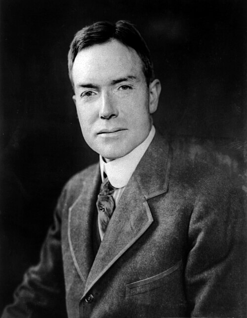

Oil Wars
One company controlled 91% of American oil refining. It was “broken up” — into 34 companies whose descendants reconsolidated into four oil majors. Then the Wall Street lawyers who represented those oil empires took charge of the CIA and the State Department — and started overthrowing governments that touched the oil supply. This is not a fuel story. It’s a control story.
The Monopoly
Standard Oil
In 1870, John D. Rockefeller founded Standard Oil of Ohio. By 1904, it controlled 91% of US oil refining and 85% of final sales. It was the most powerful monopoly in American history — and the blueprint for every monopoly that followed.
The company didn’t just sell oil. It controlled the railroads that shipped it, the pipelines that moved it, the refineries that processed it, and the politicians who regulated it. When the Supreme Court finally ordered its dissolution in 1911, the public was told the monopoly was broken.
It wasn’t. It was distributed.

The “Dissolution”
The 1911 Supreme Court decision split Standard Oil into 34 companies. Textbooks call this the triumph of antitrust. But the Rockefeller family retained stock across every single successor company. The dissolution redistributed operational control without eliminating ownership. And over the next 90 years, those 34 fragments merged back together.
The Reconsolidation
The Cartel
The Achnacarry Agreement
The dissolution didn’t create competition. It created a cartel. In 1928, the heads of the world’s largest oil companies met at Achnacarry Castle in the Scottish Highlands — ostensibly for a grouse-hunting weekend. What they actually agreed on was how to divide the planet.
Shell, Standard Oil of New Jersey, and Anglo-Persian Oil (later BP) signed the “As-Is Agreement” — a secret pact to fix global market shares and coordinate oil pricing. The cartel eventually extended to all Seven Sisters. The FTC didn’t uncover the agreement until decades later.
The July 17, 2025 unanimous (3–0) FTC vacatur of the Exxon–Pioneer consent order lifted all board restrictions on Scott Sheffield and ended federal merger-review enforcement in the matter. As of November 2026, no federal criminal antitrust charges have been filed against Sheffield.
Monopoly → Theater → Cartel → Global control → Partial challenge → Reassembly
The Coups
The Pattern
The CIA’s first covert regime-change operation was about oil. Not communism. Not democracy. Oil. And the pattern never stopped.
Every country that nationalized its oil supply, switched its oil currency, or proposed an alternative to the petroleum-dollar system got the same answer: regime change.


On January 3, 2026, U.S. forces captured Venezuelan President Nicolás Maduro in Caracas during Operation Absolute Resolve and transported him to Brooklyn, New York to face federal narcoterrorism charges. Acting President Delcy Rodríguez shifted Caracas into cooperation with Washington, prompting a rewrite of Venezuela’s Hydrocarbons Law opening upstream extraction to foreign oil majors (including ExxonMobil exploration MOUs), U.S. Treasury OFAC delistings of Delcy Rodríguez (April 2026) and National Assembly head Jorge Rodríguez (October 2026), and a partial oil-production rebound toward roughly 1.1–1.3 million barrels per day.
The Oil Pattern
See also: Scroll 002: Money Wars — “The Holdouts”
The Octopus
One Molecule, Four Control Systems
Oil isn’t just energy. It’s medicine. It’s food. It’s the feedstock for the pharmaceutical industry, the fertilizer for industrial agriculture, and the chemical base for the modern food system. The Rockefeller petroleum monopoly didn’t just control what powers your car — it controls what heals your body and feeds your family.
In June 2026, the U.S. Supreme Court ruled 7–2 in Monsanto Co. v. Durnell (Docket No. 24-1068) that federal pesticide law (FIFRA) preempts state-law “failure-to-warn” claims over Roundup’s label. In November 2026, a Missouri state court granted final approval to Bayer’s $7.25 billion nationwide class settlement resolving current and future non-Hodgkin’s lymphoma claims over a 17- to 21-year payout schedule — capping the existential litigation threat that followed Bayer’s 2018 acquisition of Monsanto.
Energy monopoly → Chemical cartel → Medical control → Agricultural dependency → Seed + chemical lock-in
The Burial
Suppressed Technologies
If petroleum is the foundation of a control system spanning energy, medicine, and food — then any technology that replaces petroleum isn’t just a business threat. It’s an existential threat to the entire architecture. And the architecture has a documented mechanism for dealing with threats.
Per USPTO data compiled by the Federation of American Scientists, active secrecy orders rose from 6,155 (FY2023) to 6,471 (FY2024), 6,543 (FY2025), and 6,653 at the end of FY2026 — with 123 new orders imposed (including 38 “John Doe” orders on private inventors) and only 13 rescinded in FY2026, 75 years after the statute’s enactment.
Where the Evidence Stops — Separating Secrecy from Lore
Real institutional secrecy — over 6,600 patent secrecy orders and decades of buried corporate climate research — is routinely discredited when writers lump it together with disproven claims or unrelated tragedies. Rigorous investigation draws a hard line between the two.
The Lock
The Petrodollar Lock
Now you see the lock. The petrodollar system from Scroll 002 isn’t just a financial arrangement — it’s an energy arrangement. Every country must buy oil. Oil is priced in dollars. Therefore every country must hold dollars.
Any technology that replaces oil doesn’t just threaten ExxonMobil — it threatens the reserve currency of the world. This is why the CIA overthrows governments and the patent office classifies inventions. It’s the same war.
Viral claims in June 2024 that a “50-year U.S.–Saudi petrodollar pact” had legally expired were false: no single 50-year treaty with a sunset clause ever existed. However, incremental diversification has continued, with Saudi Arabia participating in cross-border central bank digital currency pilots (BIS Project mBridge) and signaling openness to non-dollar oil settlement alongside ongoing U.S. security negotiations.

The Lock
Every coup in this investigation had an oil field behind it. Decades of internal climate science were buried to protect the same market. And more than 6,600 patent secrecy orders sit behind a wall the public is never permitted to inspect. The war for oil is the war for everything — because petroleum isn’t just what powers the machine. It’s what the machine is made of.
Disclosure is not a single event. It’s a process. And it only works if people are paying attention.